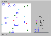
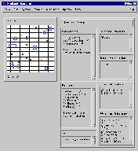
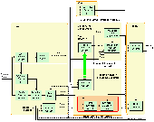
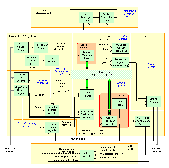

<!doctype html public "-//w3c//dtd html 4.0 transitional//en">
<html>
<head>
   <meta http-equiv="Content-Type" content="text/html; charset=iso-8859-1">
   <meta name="Author" content="Steve Allen">
   <meta name="GENERATOR" content="Mozilla/4.74 [en] (Win98; U) [Netscape]">
   <title>Abbott's Home Page</title>
<!-- saved from url=(0030)http://www.cs.bham.ac.uk/~sra/ -->
</head>
<body text="#000000" bgcolor="#FFFFE4" link="#0000EE" vlink="#551A8B" alink="#FF0000">

<h1>
<font color="#3333FF">Pop11 Experiments in Building Emotional Agents</font></h1>

<hr ALIGN=LEFT WIDTH="600">
<h2>
<i>Abbott2 and Gridland</i></h2>
When combined with the <a href="http://www.cs.bham.ac.uk/~axs/cog_affect/sim_agent.html">SIM_AGENT</a>
toolkit, Pop11 provides an attractive environment for investigating cognitively
adequate agent architectures. This web page descibes a series of experiments
developed as part of research into "<a href="http://www.cs.bham.ac.uk/~sra/Thesis">concern
processing in Autonomous Agents</a>". This is very much on-going research
(with many more ideas described in the thesis still to be tested through
the "design-based" approch).
<p>Abbott2 is an extension of work by <a href="http://www.iiia.csic.es/~lola/">Dolores
Ca&ntilde;amero</a> (incorporating ideas from the <a href="http://www.cs.bham.ac.uk/research/cogaff/0-INDEX.html">Cognition
and Affect Project</a> at Buirmingham University). Abbotts are constructed
within a subsumption style framework, where more complex behaviours are
implemented by adding agents to the society without modifying existing
society members. Abbotts are endowed with primitive motivational states
- impulses to action based on bodily needs - and “emotions” - peripheral
and cognitive responses triggered by the recognition of a significant event.
“Emotions” perform an alarm/meta-management function in Abbott, releasing
chemicals (hormones, neuromodulators, and neurotransmitters) to alter both
the perception of external stimuli and the activation levels of Abbott.s
internal motivational drives. The <a href="#Code">code</a> for Abbott2
is given below.
<br>&nbsp;
<h2>
<i>Abbott3</i></h2>
The main difference between the design of Abbott3 and its predecessors
(Abbott and Abbott2), is the absence of a clearly demarcated emotion system
(Ca&ntilde;amero.s [97] original design called for emotion agents to act
as proto-specialists in a similar style to motivation agents). As we argue
in chapters 4 and 5 of Allen [00], we believe that “emotions” are emergent
mental states caused by the interaction of a variable number of intricately
connected cognitive systems (i.e. systems that mediate arousal, attention,
perception, concepts, memories, and physiological change) operating at
different information-processing levels of the brain. Our approach towards
elucidating emotions in Abbott3, is to replicate some of these systems
at the information-level, and then explore the possible pathways through
which emotional states can emerge. The <a href="#Code">code</a> for Abbott3
is given below.
<p>We have also performed a number of simple experiments using our Abbott3
design and the Gridland toolkit. These experiments are described in chapter
8 of Allen [00]. The raw results, and instructions for reproducing these
results, can be found <a href="abbott/index.html">here</a>.
<h2>
<i>Papers</i></h2>
<a href="http://www.dfki.de/~allen">Allen, S.</a> (2000). A Concern-Centric
Society-Of-Mind Approach To Mind Design. In <i>Proceedings of the AISB'00
Symposium on How To Design A Functioning Mind</i>. April 2000, Birmingham,
England. <a href="http://www.cs.bham.ac.uk/~sra/Papers/DAMPosterSummary.pdf">Summary
PDF (127K)</a>,
<a href="http://www.cs.bham.ac.uk/~sra/Papers/DAMPosterSummary.ps.gz">Summary
Postscript (34K)</a>, <a href="http://www.cs.bham.ac.uk/~sra/Papers/DAMPosterA0.zip">Poster
StarOffice A0 (400K)</a>, <a href="http://www.cs.bham.ac.uk/~sra/Papers/DAMPosterA4.pdf">Poster
PDF A4 (320K)</a>, <a href="http://www.cs.bham.ac.uk/~sra/Papers/DAMPosterA4.ps.gz">Poster
Postscript A4 (230K)</a>
<p><a href="http://www.dfki.de/~allen">Allen, S.</a> (2001). <i><a href="http://www.cs.bham.ac.uk/~sra/Thesis/index.html">Concern
Processing in Autonomous Agents</a></i>. Submitted PhD Thesis, School of
Computer Science, University of Birmingham.
<p><a href="http://www.iiia.csic.es/~lola/">Ca&ntilde;amero, D.</a> (1997).
Modeling Motivations and Emotions as a Basis for Intelligent Behavior.
In <i>Proceedings of the First International Symposium on Autonomous Agents,
AA'97</i>, Marina del Rey, CA, February 5-8, The ACM Press.
<br>(<a href="http://www.ai.mit.edu/people/lola/aa97-online.ps">http://www.ai.mit.edu/people/lola/aa97-online.ps</a>)
<br>&nbsp;
<h2>
<i>Images</i></h2>
&nbsp;
<table>
<tr ALIGN=CENTER VALIGN=BOTTOM>
<td><a href="Images/Gridland.gif"></a></td>

<td><a href="Images/GridlandToolkit.gif"></a></td>
</tr>

<tr>
<td>
<center>Gridland world (<a href="Images/Gridland.gif">large image 10K</a>)</center>
</td>

<td>
<center>Gridland Toolkit (<a href="Images/GridlandToolkit.gif">large image
20K</a>)</center>
</td>
</tr>

<tr>
<td>
<center><a href="Images/Abbott2.gif"></a></center>
</td>

<td>
<center><a href="Images/Abbott3.gif"></a></center>
</td>
</tr>

<tr>
<td>
<center>Abbott2 architecture (<a href="Images/Abbott2.gif">large image
20K</a>)</center>
</td>

<td>
<center>Abbott3 architecture (<a href="Images/Abbott3.gif">large image
28K</a>)</center>
</td>
</tr>
</table>

<br>&nbsp;
<h2>
<a NAME="Code"></a><i>Code</i></h2>
Requires <a href="http://www.cs.bham.ac.uk/research/projects/poplog/">Pop11</a>,
<a href="http://www.opennc.org/openmotif/">OpenMotif</a>
(or Motif), and the Birmingham Pop11 installation (<a href="http://www.cs.bham.ac.uk/research/projects/poplog/rclib.tar.gz">rclib</a>,
<a href="http://www.cs.bham.ac.uk/research/projects/poplog/sim.tar.gz">simagent</a>,
<a href="http://www.cs.bham.ac.uk/research/projects/poplog/prb.tar.gz">poprulebase</a>)
<br>&nbsp;
<table>
<tr VALIGN=TOP>
<td WIDTH="250"><b><font face="Arial,Helvetica"><i>To Be Updated</i> -
gzipped tar file</font></b></td>

<td><font face="Arial,Helvetica">Code for Experiment 1 - see section 6.2.2
of <a href="http://www.cs.bham.ac.uk/~sra/Thesis">thesis</a></font>
<br><font face="Arial,Helvetica">(Motivated Control of Behaviour)</font></td>
</tr>

<tr VALIGN=TOP>
<td><b><font face="Arial,Helvetica"><i>To Be Updated</i> - gzipped tar
file</font></b></td>

<td><font face="Arial,Helvetica">Code for Experiment 2 - see section 6.2.3
of <a href="http://www.cs.bham.ac.uk/~sra/Thesis">thesis</a></font>
<br><font face="Arial,Helvetica">(Affective Control of Motivation)</font></td>
</tr>

<tr>
<td><b><font face="Arial,Helvetica"><a href="Code/Abbott3_140101.tgz">Abbott3
(14/01/2001)</a> - gzipped tar file</font></b></td>

<td><font face="Arial,Helvetica">Code for Abbott3 - see sections 7 and
8 of <a href="http://www.cs.bham.ac.uk/~sra/Thesis">thesis</a></font></td>
</tr>
</table>

<hr ALIGN=LEFT WIDTH="600">
<br><i>Last updated by <a href="http://www.dfki.de/~allen">Steve Allen</a>
14 January '01</i>
<br>&nbsp;
</body>
</html>
